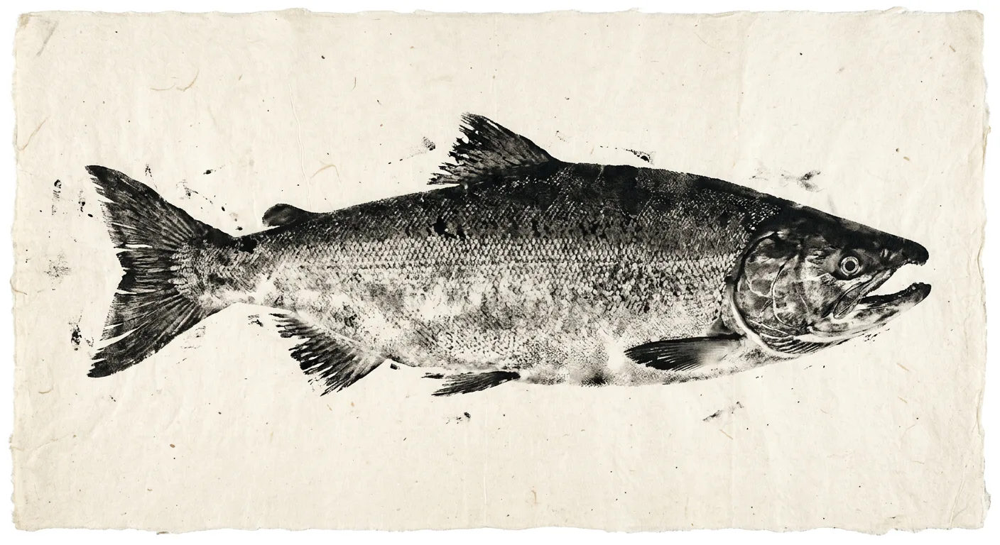
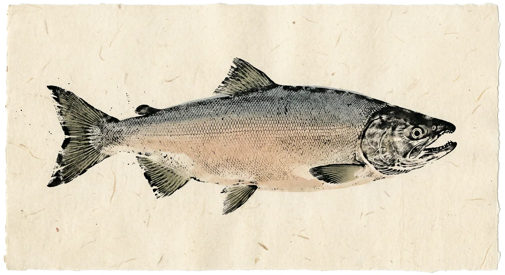
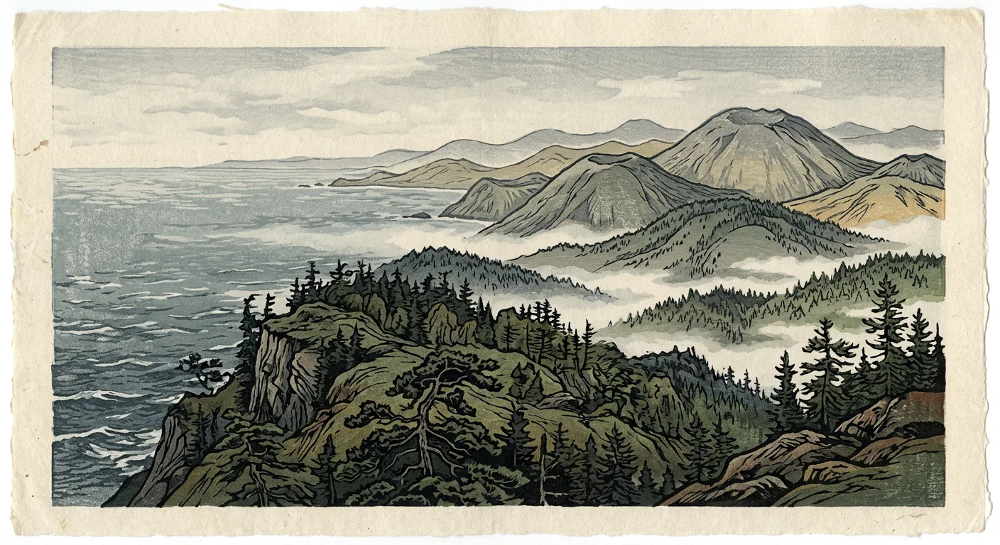
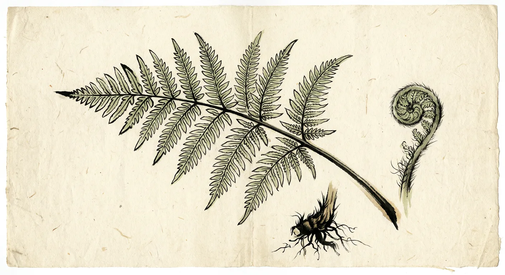
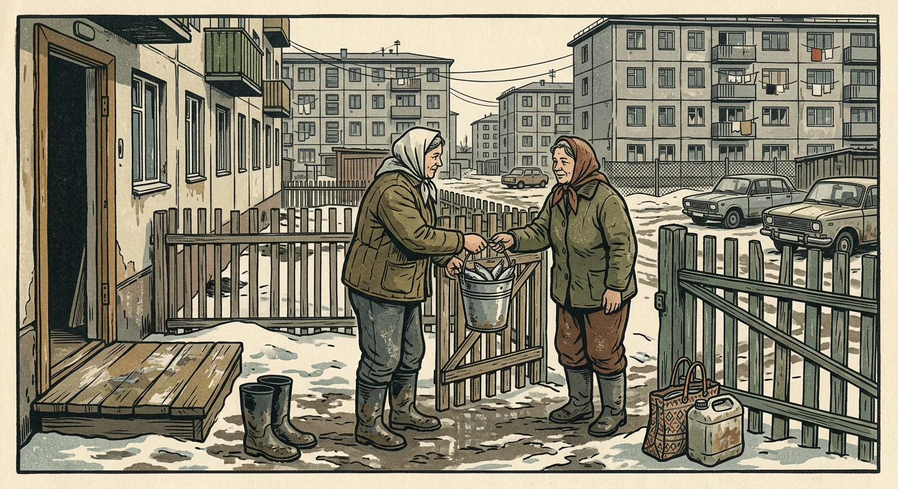
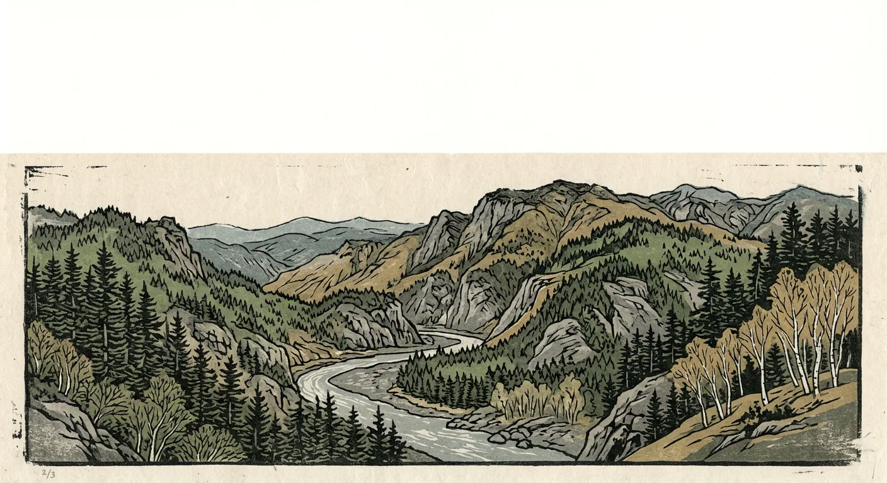
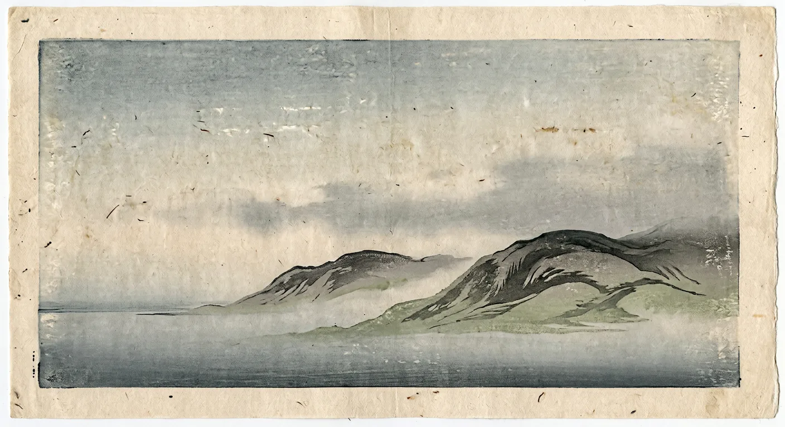
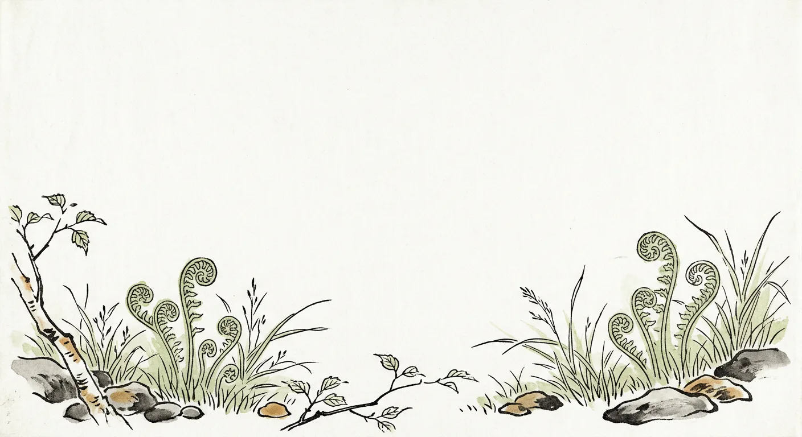

MASTER PROMPT 03 · Этапы 2–3 · визуальный прототип и тестовые иллюстрации
ОСТРОВ. ПРОДУКТ. ВКУС
Sakhalin Natural History Print Atlas — рабочий прототип визуальной системы: гётаку для морских продуктов, мокуханга для географии, суми-э для растений и животных, японская книжная графика для быта. Многослойный «бумажный театр» и текст, проходящий между планами.
Все изображения на этой странице — цифровые работы: художественная реконструкция в эстетике гётаку, мокуханги, суми-э и японской книжной графики. Это не подлинные оттиски с реальных рыб и предметов (MASTER PROMPT 03, §02). Тексты — фрагменты авторской рукописи, приведены без изменений.
Этап 3 · Тестовые иллюстрации · четыре техники
Пять направлений (и цветной вариант гётаку) — проверка, что все техники выглядят частями одной книги. После вашего утверждения — массовое производство партиями с промежуточными проверками.

Кета · монохромное гётаку
Основная техника морских продуктов: оттиск с рыбы, неравномерное давление, прожатые и сухие участки, волокна васи, крап. Смотрится как скан настоящего ручного листа.
A · Гётаку
Кета · гётаку с подкраской
Тот же оттиск с деликатной ручной подкраской полупрозрачными слоями: тушь остаётся главной, цвет — сдержанный. Один из допустимых вариантов серии.
A · Гётаку, вариант
Сопки и туман · мокуханга
География и пейзаж: мягкие цветовые переходы, видимые печатные слои, лёгкие сдвиги приводки. Сахалинский рельеф, а не условный японский остров.
B · Мокуханга
Папоротник-орляк · суми-э
Дикоросы и природа: живая тушевая линия, ботаническая узнаваемость, минимум декора, сдержанная подкраска — как лист старого естественно-научного атласа.
C · Суми-э и ботаника
Соседский обмен · Долинск
Быт — отдельная техника, не гётаку: японская книжная графика и мокуханга. Обычный городской двор, естественные жесты, лёгкая документальная ирония. Долинск — город, не рыбацкая деревня.
D · Книжная графика
Бумажный театр · слои
Каждый план — отдельный файл (фон, средний, передний) с метаданными и параллаксом. Ниже — рабочая демонстрация со сценой «Сопки и туман».
Слои · scene_05_sopki_fogБумажный театр · демонстрация механики
Текст проходит через сцену: заголовок стоит перед дальним планом, лид-абзац — между средним и передним планами. При прокрутке страницы слои движутся с разной скоростью; при системной настройке «уменьшить движение» сцена остаётся статичной.

Раздел первый · Остров
Сопки и туман
«На вершине сопки человек видит остров целиком — или думает, что видит. На самом деле большую часть пространства закрывают складки рельефа и погода.»

слои: 0.10 / 0.35 / 0.70 · прокрутите страницу
{
"scene_id": "scene_05_sopki_fog",
"chapter": "ostrov",
"style": "mokuhanga_editorial",
"layers": [
{ "id": "background_sky", "depth": 1, "parallax": 0.10 },
{ "id": "middle_hills", "depth": 2, "parallax": 0.35 },
{ "id": "foreground_ferns", "depth": 3, "parallax": 0.70 }
],
"textLayer": { "between": ["middle_hills", "foreground_ferns"] },
"animation": { "prefersReducedMotion": "static" }
}
Этап 2 · Экраны iPhone
Пять тестовых экранов по дизайн-референсу: главная с островом, глава «Остров» с бумажным театром, глава «Море» с гётаку, продуктовая страница, сезонный календарь.

ОСТРОВ.
ПРОДУКТ.
ВКУС.
атлас острова · продукты · память
Экран 1. Главная. Интерактивный атлас: многослойный остров (планируется мокуханга-картография), заголовок, тонкое меню, иконка звука. Прелоадинг с рассеивающимся туманом.
Раздел первый
Остров как состояние
«Мне кажется, Сахалин лучше читать не сверху вниз по списку достопримечательностей, а постепенно спускаясь по его рельефу. Сначала — горы и сопки.»
На вершине сопки человек видит остров целиком — или думает, что видит. На самом деле большую часть пространства закрывают складки рельефа и погода. Туман может появиться быстро и так же быстро исчезнуть.
Он не обязан быть мистическим символом. Иногда это просто погода, которая мешает рассмотреть дорогу. Но именно с такого тумана удобно начинать путешествие: сначала виден только ближайший склон, затем постепенно открывается следующий.
Спускаясь ниже, мы попадаем в лес. Здесь масштаб меняется. Вместо дальнего горизонта — отдельные стволы, влажная земля, листья, грибы, ягоды и растения, которые нужно уметь различать.
Экран 2. Глава «Остров». Вертикальный бумажный театр: текст между средним и передним планами, параллакс при прокрутке, статичный режим при «уменьшить движение».
Раздел второй
Море
«Море здесь не фон и не линия на карте. Оно задаёт ритм. Оно приносит рыбу и морепродукты, меняет доступность побережья, влияет на дороги и планы.»
Экран 3. Глава «Море». Разделительная страница с крупным заголовком, курсивным лидом и гётаку-плитой. Сезонность — тонкой строкой, без цветных карточек.
Кета
☀ Лето — Осень
«Кета (Oncorhynchus keta) на Сахалине описана как летняя и осенняя расы; их распределение различается по районам.»
Фрагмент черновика главы. В книге — полный авторский текст: «кета» — не одинаковая рыба вне времени и места. Рецепты добавляются автором, без домыслов.
Экран 4. Продуктовая страница. Иллюстрация сверху, название, тонкая сезонная строка, текст, «Заметка шефа ↗» с подписью «Обработка · Техника · Авторский рецепт». Не CTA и не кнопка покупки.
Сезон
Календарь продуктов Сахалина
Весна
Май — Июнь
Лето
Июль — Август
Осень
Сентябрь — Ноябрь
Зима
Декабрь — Февраль
Календарь связан с метаданными продуктовых глав. В карточках продукта различаются: природный сезон · период добычи или сбора · фактическая доступность на рынке.
Экран 5. Сезонный календарь. Отдельная страница «СЕЗОН» с сеткой 2×2 и нижней панелью из пяти разделов. Внутри продуктовых глав — только тонкая строка сезона.
ОСТРОВ.
ПРОДУКТ.
ВКУС.
«Сначала — горы и сопки. Потом лес, который закрывает горизонт и заставляет смотреть под ноги. Ниже — реки и долины, где вода собирает в себе движение острова.»
Экран 6. Десктоп. Полноценный экран: навигация разделов, сцена бумажного театра как главный план, тонкое оглавление сбоку — доступно в любой момент, без обязательного прохождения маршрута.